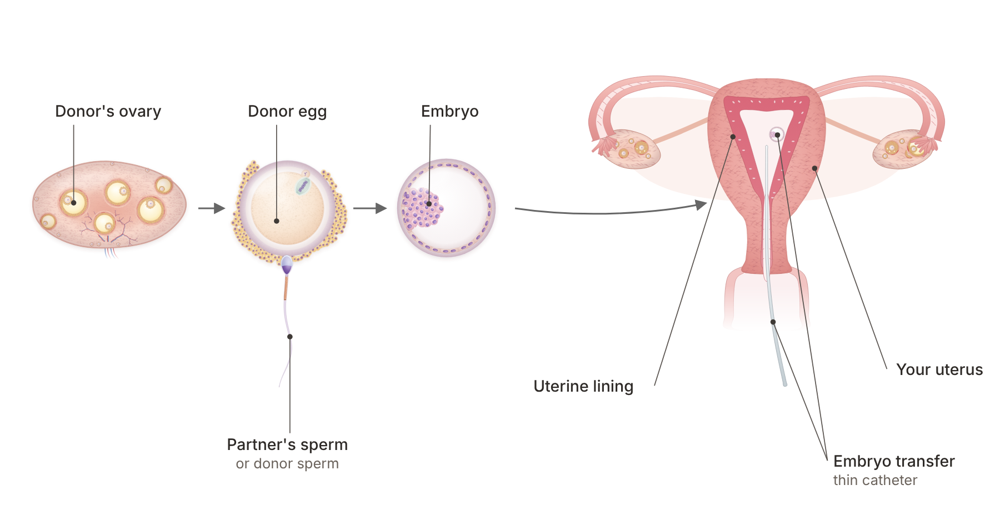

Quick answer: The donor eggs procedure gives you a real path to pregnancy when your own eggs are not cooperating. Eggs from a young, screened donor are fertilized in the lab, and the best embryo is placed in your uterus after a few weeks of hormone preparation. Because success follows the donor's age rather than yours, it works well for women in their 40s and 50s. You carry the pregnancy, you give birth, and you are your baby's mother.
In this article
The donor eggs procedure is in vitro fertilization (IVF) using eggs from another woman, called the donor, instead of your own. Her eggs are fertilized with your partner's sperm or donor sperm, and the embryo that grows is placed in your uterus. From that point on, the pregnancy is yours: your body nourishes the baby, you feel every kick, and you give birth.
The reason it works so well comes down to egg age. Most of the drop in fertility with age is about the eggs, not the uterus. Donors are usually between 21 and 34 and go through infectious disease, genetic and psychological screening, according to the American Society for Reproductive Medicine's egg donation fact sheet. The same fact sheet notes that success with donor eggs is not considered to be related to the recipient's age.
That is the heart of the donor eggs procedure: young eggs, your uterus, your pregnancy. At Rejuvenating Fertility Center, our donor egg program is built for women who have been told "no" somewhere else. There is no age cutoff and no weight cutoff, and our donor program has a 95% egg thaw survival rate and an 82% clinical pregnancy rate.
Most women who choose donor eggs have already tried IVF with their own eggs or have been told their odds with them are low. Choosing donor eggs is a decision to move toward the pregnancy you want, and for many women it is the step that finally works.
The feelings that come with it are real. One woman on a patient forum called the news "hugely complicated news to process," and many describe "grieving the genetic connection" before they felt ready to move forward. Both feelings are normal, and both can sit right alongside excitement. These are the most common reasons patients come to donor eggs.
When anti-Müllerian hormone (AMH) is very low or follicle-stimulating hormone (FSH) is high, the ovaries may make few eggs even with strong medication. Some women try PRP ovarian rejuvenation first, which is designed to support the ovaries' own response. Others move straight to donor eggs. Our guide to fertility treatment for high FSH explains how to weigh both paths.
Egg quality changes with age in ways that no supplement fully reverses. Our article on improving egg quality after 40 covers what helps with your own eggs. Donor eggs add a second path that does not depend on egg age at all, which is why so many women in their mid-40s and beyond choose them.
POI means the ovaries slow down before age 40. Some women with POI still ovulate now and then; others do not. Our post on premature ovarian failure walks through every option, and donor eggs are among the most successful of them.
After repeated IVF failure, or after a retrieval where no eggs were found, donor eggs help separate egg problems from uterine problems. If embryos from young donor eggs still do not implant, the next step is to look at the uterus and the immune system, which is where our reproductive immunology team comes in.
The donor eggs procedure has six main steps, from your first visit to the pregnancy test. If you have been wondering how donor eggs work in practice, this is the order things happen in:
Consultation and testing. You meet the team, review your history, and have blood work, infectious disease screening and an evaluation of your uterus. If you are using a partner's sperm, your partner gives a semen sample and is screened too.
Choosing a donor. You choose a donor from a frozen egg bank or a fresh donor program. Profiles usually include health history, education and physical traits, and some include childhood photos.
Preparing your uterine lining. You take estrogen to build the lining of the uterus (the endometrium), then progesterone to make it ready for an embryo, as the ASRM fact sheet describes. This usually means pills, patches or injections for a few weeks.
Fertilization in the lab. Frozen donor eggs are thawed, or fresh eggs are collected from the donor. Each egg is fertilized, often with intracytoplasmic sperm injection (ICSI), where a single sperm is placed into each egg.
Embryo transfer. The embryo is placed in your uterus through a thin, soft catheter, usually 3 to 5 days after fertilization. It feels similar to a Pap smear and needs no anesthesia.
Pregnancy test. A blood test confirms the pregnancy, usually within two weeks of the transfer.
Extra good-quality embryos can be frozen for a future sibling. Our guide to embryo freezing explains how that works and how long embryos keep.
Donor eggs have some of the highest success rates in fertility care, and the research agrees on why: the age of the egg drives the result. According to SART and CDC data summarized by ASRM, the average birth rate in 2020 was 53.5% per embryo transfer with fresh donor eggs (ASRM, 2023).
Studies differ on whether fresh or frozen donor eggs do better. A 2025 study of 214 recipient cycles in Cureus found cumulative live birth rates of 69.6% with fresh eggs and 66.7% with frozen (vitrified) eggs, with no significant difference. A much larger SART CORS registry analysis of 14,972 US donor egg cycles found a somewhat lower chance of live birth with frozen donor eggs (adjusted relative risk 0.81). The gap between those results points to one thing you can check: how well your clinic's lab thaws eggs.
Pregnancies from donor eggs need a careful obstetric plan. A 2018 meta-analysis in JBRA Assisted Reproduction, which pooled six studies and 37,994 pregnancies, found that egg donation was linked to a higher risk of preeclampsia (high blood pressure in pregnancy) than IVF with a woman's own eggs. Knowing this early means your care team can plan closer blood pressure monitoring from the first trimester.
Study | Who was studied | What it found | What it means for you |
ASRM summary of SART/CDC 2020 data | US transfers with fresh donor eggs | 53.5% average birth rate per embryo transfer | Success follows the donor's age, not yours |
Kostoglou et al., Cureus, 2025 | 214 recipient cycles | Cumulative live birth 69.6% fresh vs. 66.7% frozen, no significant difference | Frozen eggs did about as well as fresh in this clinic |
SART CORS registry analysis | 14,972 US donor egg cycles | Frozen donor eggs: adjusted relative risk of live birth 0.81 vs. fresh | Ask for your clinic's egg thaw survival rate |
Schwarze et al., JBRA Assisted Reproduction, 2018 | 6 studies, 37,994 pregnancies | Preeclampsia odds ratio 4.50 vs. IVF with own eggs | Plan closer blood pressure checks in pregnancy |
Averages describe large groups. Your own plan is built around your uterus, your health, the donor you choose and the embryos you have, which is why every recipient at RFC starts with a full workup.

"Will the baby feel like mine?" is the question patients ask most, and the one most guides to the donor eggs procedure skip. The short answer is that your body builds your baby for nine months, and early research suggests your uterus may even influence how the embryo's genes behave.
The donor provides the DNA in the egg. Epigenetics is the layer of chemical switches on top of DNA that decides which genes are turned on or off, and when. Those switches respond to the environment the embryo grows in, and for the first nine months that environment is you. That is why the link between epigenetics and donor eggs has become one of the most searched topics among recipients.
A 2023 review in the Journal of Assisted Reproduction and Genetics describes how the glands of the uterine lining release a tiny molecule called hsa-miR-30d during the window when an embryo can implant. The embryo's outer layer takes it up, and it may change which genes the embryo uses. This is early laboratory science, not proof of how traits are passed on. Still, it supports what many mothers feel: pregnancy is a two-way conversation between your body and your baby.
Attachment grows through pregnancy, birth, feeding and the everyday work of raising a child. Many families find it helps to talk through donor choice, privacy and how to tell their child before treatment starts, and ASRM recommends counseling for recipients for exactly these reasons. A counselor who works with donor egg families can help you think these through.
Both fresh and frozen donor eggs lead to healthy pregnancies, so the right choice depends on your timeline, budget and family plans. Here is how they compare in practice.
Frozen donor eggs (from an egg bank):
The eggs are ready now, so there is no need to match your cycle with a donor's.
You buy a set group of eggs, which makes planning and budgeting simpler.
Results depend on how well the lab thaws eggs; our donor program's thaw survival rate is 95%.
Fresh donor eggs (a donor cycle for you):
The donor goes through stimulation and egg collection, and all of her eggs from that cycle are often yours.
More eggs usually means more embryos to freeze for a future sibling.
Her cycle must be matched with yours, which adds coordination time.
If you are not ready for donor eggs yet, you have other choices too. Our three types of IVF, including natural and mini IVF, work with your own eggs, and egg freezing has no age or weight cutoff at RFC. Younger women with a straightforward history may also be a good fit for our sister clinic, Aurea Fertility Center.
The donor eggs procedure is usually faster with frozen eggs than with a fresh donor, because there is no donor cycle to schedule. Most of the time goes into testing, choosing a donor and preparing your lining.
Costs depend on the donor source, the number of eggs, your medications and whether you freeze extra embryos. Our pricing page lists current fees, and you can ask our team about insurance before you commit to anything.
An evaluation of the uterine cavity, such as a saline sonogram or hysteroscopy.
Testing for chronic endometritis, a silent uterine inflammation, if you have had failed transfers.
Thyroid and blood sugar checks, and a baseline blood pressure reading.
Immune testing if you have had repeated implantation failure or miscarriage.
What is your lab's thaw survival rate for donor eggs?
How many eggs come in a group, and how many embryos should I expect?
Do you offer open-identity donors?
How will my blood pressure be monitored during pregnancy?
Can I do my monitoring near home and travel in for the transfer?
Our physicians hold board certifications in reproductive endocrinology and reproductive immunology, and our research on ovarian rejuvenation has been covered by Forbes. You can read more about why patients choose RFC when other clinics have said no.
With frozen donor eggs, most of the time goes into testing, choosing a donor and a few weeks of estrogen and progesterone to prepare your lining. A fresh donor cycle takes longer because the donor's cycle has to be matched with yours. Your team will give you a calendar once your testing is done.
You do not need any prior IVF to use donor eggs. You will not need ovarian stimulation or an egg retrieval, because the eggs come from the donor. Your part is testing, hormone preparation of your lining and the embryo transfer itself.
ASRM notes that success with donor eggs is not considered to be related to the recipient's age, because it follows the age of the egg. National data summarized by ASRM showed an average birth rate of 53.5% per transfer with fresh donor eggs in 2020. Your own odds also depend on your uterus and overall health, which your workup will check.
Your baby's genes come from the donor and the sperm provider, so many families choose a donor with similar features. Early research suggests your uterus may influence which of the embryo's genes are switched on. Many parents also find that habits, expressions and mannerisms come from the family a child grows up in.
Yes. RFC has no age cutoff and no weight cutoff, and we specialize in the cases other clinics turn away. Your workup checks your blood pressure and overall health so that your pregnancy plan is as safe as possible.
Many families choose openness and share the story early in simple words. ASRM recommends counseling for recipients, and a counselor can help you decide how and when to talk about it. There is no single right script, and you do not have to decide everything before treatment.
The donor eggs procedure turns the biggest barrier in fertility after 40, egg age, into something you can work around. Your uterus, your pregnancy and your love are what make this baby yours. With careful testing and a good lab, donor eggs are one of the most reliable ways to grow your family.
Rejuvenating Fertility Center welcomes women of every age and size, including those who have been told "no" elsewhere. If you are weighing donor eggs, book a consultation with our team and we will build a plan around your history. Patients outside New York and Connecticut can do most of their monitoring locally and travel in for the transfer.